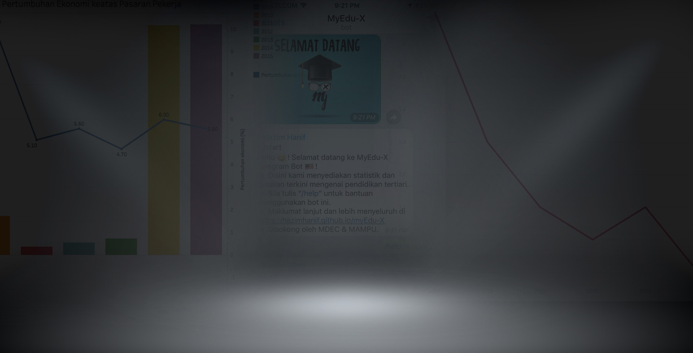
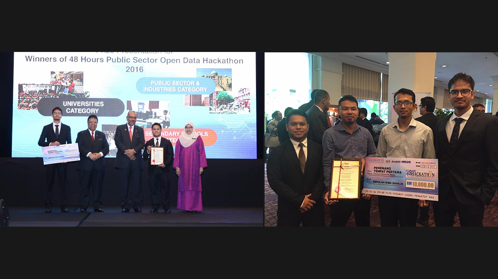

-

 Selamat DatangMyEdu-XInisiatif analisis data pendidikan di hujung jari.Maklumat Lebih Lanjut
Selamat DatangMyEdu-XInisiatif analisis data pendidikan di hujung jari.Maklumat Lebih Lanjut -

MyEdu-XPemenang Tempat Pertama MAMPU 48 Jam Hackathon Data Terbuka Sektor Awam 2016


Laman ini menyediakan statistik analisis data terbuka sektor awam.
MyEdu-X memperoleh data berkaitan pendidikan negara bersama data sokongan dari pelbagai sumber. Seterusnya merungkai hubungkait antara kadar pekerjaan graduan di Malaysia dengan faktor-faktor luar.
Sumber data:
Bot Telegram

Muat turun aplikasi permesejan Telegram di AppStore atau Google Play


Klik pada pautan link untuk mula berinteraksi dengan bot Telegram MyEdu-X
Lalukan tetikus anda ke atas gambar di sebelah untuk melihat contoh interaksi dengan bot MyEdu-X